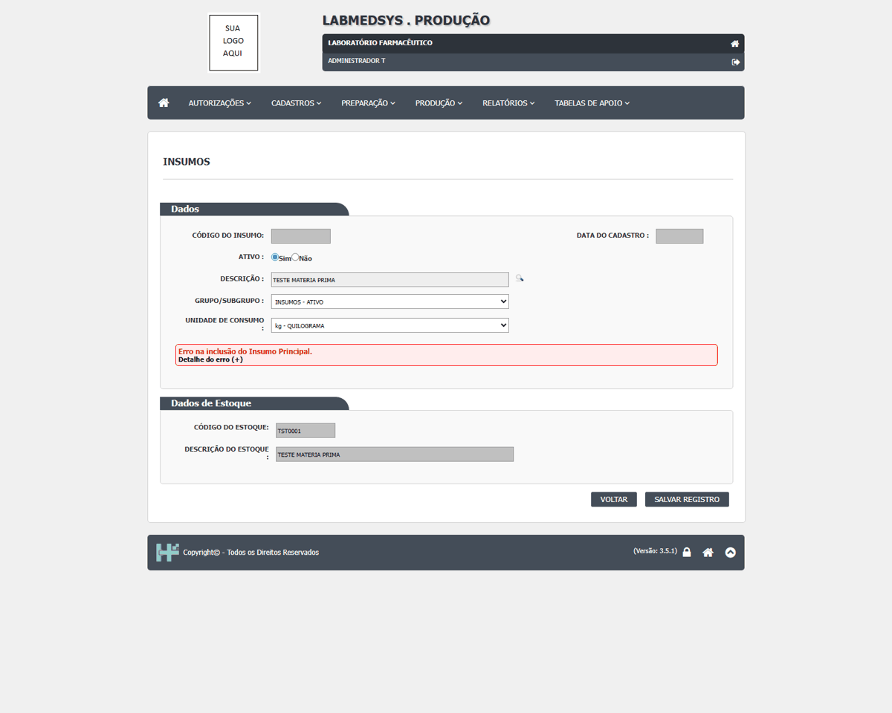
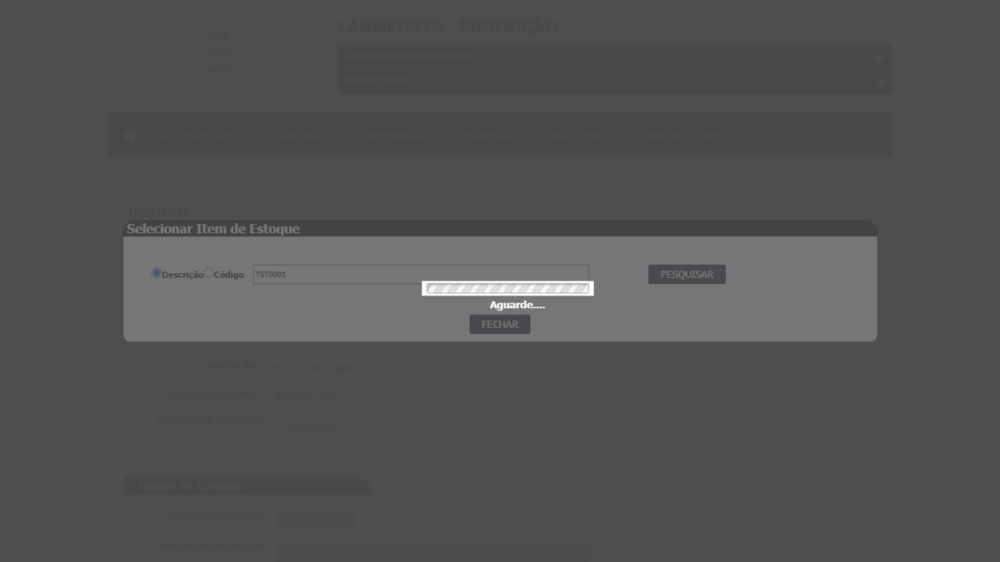
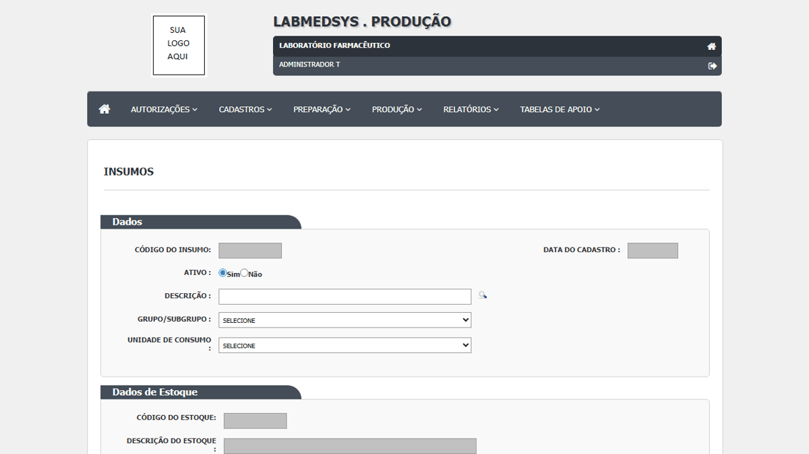

DV-PRO-001 · Mensagem genérica ao rejeitar item de Estoque já associado
Ao tentar incluir o insumo TESTE MATERIA PRIMA associado ao item de Estoque TST0001, a tela apresentou a mensagem exata ‘Erro na inclusão do Insumo Principal’ e o cadastro não apareceu na consulta posterior. A tentativa adicional solicitada nesta retomada foi iniciada, mas não chegou à gravação; permanece necessária para reteste.
Como reproduzir o erro, passo a passo
- Abrir Produção > Cadastros > Cadastro de Insumos.
- Selecionar Incluir e preencher a descrição TESTE MATERIA PRIMA, grupo INSUMOS - ATIVO e unidade kg.
- Abrir a seleção de Item de Estoque e associar TST0001.
- Salvar o registro e consultar novamente a lista.
Esperado
O insumo TESTE MATERIA PRIMA é salvo associado ao item de estoque TESTE, e aparece na consulta.
Obtido
A tela mostrou ‘Erro na inclusão do Insumo Principal’; o registro não apareceu após nova consulta.
Evidência (captura da tela)


